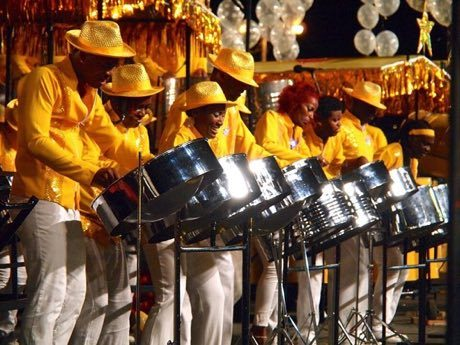
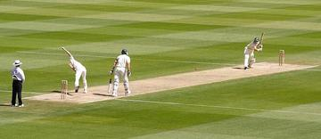

Home / Age of Contact and Craft / The Americas: Caribbean
Playable heritage gameSteelpan
Also known as steel drum
The steelpan is a pitched percussion instrument made in Trinidad and Tobago from the hammered head of a steel drum, with each note a shaped dome struck by a rubber-tipped stick. On the lead pan the notes are laid out in a ring so that neighbours sit a fourth or fifth apart.



How to play
- Each round pad is a note of the pan, set out in the order of a lead pan's ring: neighbouring pads are a fourth or fifth apart.
- Notes fall toward the line: strike the pad for each as it lands.
- Choose a scale walk, a syncopated calypso lilt, or a run round the whole ring of notes.
- Each tune plays through twice.
Rules at a glance
- Twelve notes, one octave of semitones, set out in fourths and fifths.
- A stroke within a fraction of a beat is perfect; a close one is good; extra strokes cost points.
- Three stars need nearly every note on time.
About the tradition
The steelpan grew in Trinidad and Tobago in the 1930s and 1940s out of street percussion made from bamboo and then from oil drums. Pan bands of dozens of players rework popular tunes every year for the island's carnival and its band contests.
Origins
Usually placed in the era of Age of Contact and Craft (about 1500 to 1800), although its exact origins are uncertain, within the cultural world of The Americas: Caribbean.
Credits
- Instrument: Trinidad and Tobago tradition; patterns written for this game
- Photo: Kip1234, CC BY-SA 4.0, source on Wikimedia Commons
- Text: CC BY-SA 4.0, World Heritage Games.
Sources

Get the app
Steelpan is one of 10 drums and rhythms in the Drum Music of the World app for iPhone, iPad and Android. Submitted to the App Store and Google Play; in review. Store links appear here the day it goes live. One app, many traditions, no account needed.
More games to play

Bandoneon and tango rhythm
Argentina +1 · Musical instrumentsPlay preview · in the Drum Music of the World app


Balafon Gourd Xylophone
Mali +2 · Musical instrumentsPlay preview · in the Drum Music of the World app
More from Trinidad and Tobago

Kalinda Stick Duel
Trinidad and Tobago · Wrestling and martial sports

Street play games
Trinidad and Tobago · Dexterity and skill games
Yard cricket
Trinidad and Tobago +5 · Street and playground games
All 6 traditions from Trinidad and Tobago See them on the map